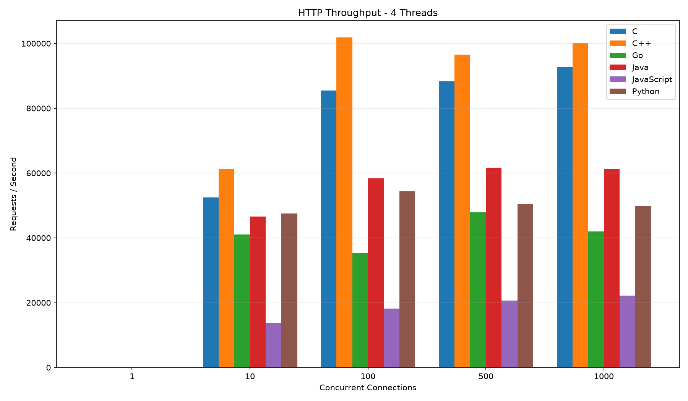
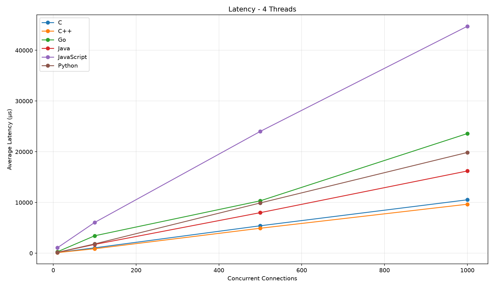
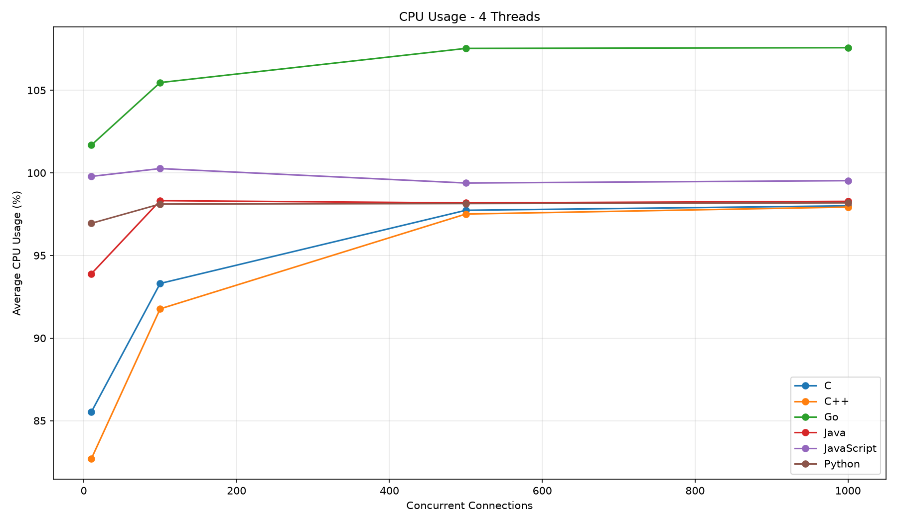
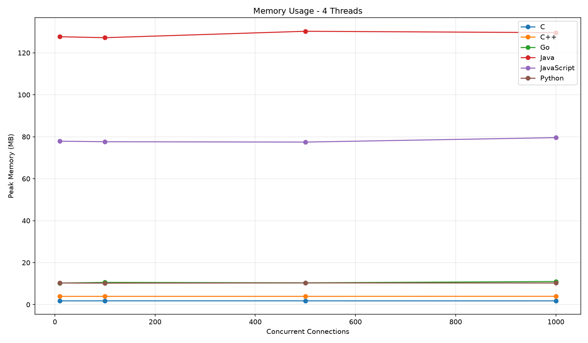

Writing the Same HTTP Server in Six Languages
01 · Why I Did This
I wanted to know what actually happens when different programming languages are used to build the same HTTP server.
Not a language-war benchmark pulled from somewhere on the internet. Not a synthetic loop that does nothing useful. An actual server accepting connections, reading HTTP requests, producing HTTP responses and dealing with increasing amounts of concurrency.
So I built roughly the same HTTP server in C, C++, Go, Java, JavaScript and Python.
Then I threw concurrent connections at them and measured throughput, latency, CPU usage and memory usage.
The goal wasn't to prove that one language is universally better than another. The goal was to understand what the runtime, networking model and implementation actually do under load.
02 · What Actually Is an HTTP Server?
Before comparing implementations, it helps to understand what the program is actually doing.
At its simplest, an HTTP server is a program that listens for network connections, receives HTTP requests and sends HTTP responses back to clients.
Underneath HTTP sits a transport connection. For the servers tested here, that means TCP sockets.
socket()
│
▼
bind()
│
▼
listen()
│
▼
accept()
│
▼
read request
│
▼
parse HTTP
│
▼
build response
│
▼
write response
│
▼
close connectionThe TCP side
The server first creates a socket, binds it to an address and port, and starts listening for incoming connections. When a client connects, the server accepts that connection.
The HTTP side
Once the connection exists, the server receives bytes. Those bytes represent an HTTP request.
GET / HTTP/1.1
Host: localhost
Connection: closeThe server then produces something like:
HTTP/1.1 200 OK
Content-Type: text/plain
Content-Length: 18
hello from TaHooRThat's the basic loop.
The interesting part is what happens when hundreds or thousands of clients want to do this at the same time.
03 · The Six Implementations
I tried to keep the servers intentionally simple. The goal was to benchmark the networking and runtime behaviour rather than compare six completely different frameworks.
C
The C implementation stays close to the underlying socket API. There is very little abstraction between the server and the operating system.
int server_fd = socket(AF_INET, SOCK_STREAM, 0);
bind(server_fd, (struct sockaddr *)&address, sizeof(address));
listen(server_fd, SOMAXCONN);
while (1) {
int client_fd = accept(server_fd, NULL, NULL);
/* read request */
/* build response */
/* write response */
close(client_fd);
}The complete implementation is available in the benchmark repository:
→ View the complete C implementation on GitHub
C++
C++ uses the same underlying operating-system networking primitives, but the implementation can be structured with higher-level language features.
int server = socket(AF_INET, SOCK_STREAM, 0);
bind(server, reinterpret_cast<sockaddr*>(&address),
sizeof(address));
listen(server, SOMAXCONN);
while (true) {
int client = accept(server, nullptr, nullptr);
// read request
// build response
// write response
close(client);
}→ View the complete C++ implementation on GitHub
Go
Go takes a very different approach to concurrency. Instead of manually creating and managing an operating-system thread for every connection, the implementation can use goroutines.
listener, err := net.Listen("tcp", ":8080")
if err != nil {
log.Fatal(err)
}
for {
conn, err := listener.Accept()
if err != nil {
continue
}
go handleConnection(conn)
}→ View the complete Go implementation on GitHub
Java
The Java implementation runs inside the JVM. That means the benchmark isn't just measuring the application code itself; JVM startup, memory management and the runtime environment are part of the overall picture.
ServerSocket server = new ServerSocket(8080);
while (true) {
Socket client = server.accept();
// read request
// build response
// write response
client.close();
}→ View the complete Java implementation on GitHub
JavaScript
The JavaScript server uses Node.js. Instead of mapping every connection directly to a thread, Node's networking model is built around asynchronous, event-driven I/O.
import http from "http";
const server = http.createServer((req, res) => {
res.writeHead(200, {
"Content-Type": "text/plain"
});
res.end("hello from TaHooR");
});
server.listen(8080);→ View the complete JavaScript implementation on GitHub
Python
Python gives us a much higher-level interface to networking. That makes the implementation compact and readable, while also introducing the runtime characteristics that show up in the benchmark.
from http.server import HTTPServer, BaseHTTPRequestHandler
class Handler(BaseHTTPRequestHandler):
def do_GET(self):
body = b"hello from TaHooR"
self.send_response(200)
self.send_header("Content-Type", "text/plain")
self.send_header("Content-Length", str(len(body)))
self.end_headers()
self.wfile.write(body)
server = HTTPServer(("0.0.0.0", 8080), Handler)
server.serve_forever()→ View the complete Python implementation on GitHub
04 · Benchmark Methodology
Each language was tested using the same general workload. The benchmark varied the number of concurrent connections and the number of worker threads used by the test.
Concurrent connections
1
10
100
500
1000Thread counts
1 thread
2 threads
4 threads
8 threadsMetrics
- HTTP throughput
- Average latency
- Average CPU usage
- Peak memory usage
The aggregate dataset contains 51 completed tests for each language.
These results describe these particular implementations, runtime configurations, hardware and workload. They should not be treated as a universal ranking of programming languages.
05 · Results
And now for the part where I make several graphs and pretend I didn't spend way too long staring at them.
Aggregate results
| Language | Requests/s | CPU | Peak memory |
|---|---|---|---|
| C | 59,738 | 71.6% | 1.78 MB |
| C++ | 71,047 | 70.6% | 3.92 MB |
| Go | 42,962 | 93.2% | 10.48 MB |
| Java | 57,239 | 82.1% | 127.44 MB |
| JavaScript | 22,500 | 98.7% | 79.52 MB |
| Python | 53,351 | 82.7% | 10.28 MB |
Throughput
Throughput measures how many HTTP requests the server is able to process per second.

Latency
Latency shows how long requests take to complete. As concurrency increases, the differences between the implementations become much more visible.

CPU usage
CPU usage gives us another view of the cost of handling the workload.

Memory usage
Memory usage is where some of the runtime differences become particularly obvious.

The full dataset
The graphs above are only the visual summary. The raw benchmark results are available alongside the source code.
→ View the raw benchmark data on GitHub
06 · What I Learned
The biggest takeaway wasn't that one language "won".
It was how much the surrounding execution model matters. The language is only one part of the system. The runtime, networking APIs, concurrency model, memory management and implementation itself all affect the final result.
I also learned that adding more threads doesn't magically make a server faster. At some point the workload, runtime and machine become the limiting factors.
Most importantly, benchmarking forced me to stop thinking about programming languages as isolated syntax choices. They're different ways of interacting with the machine.
07 · Why Am I Cooler Than Random Kids?
$ ./why-am-i-cooler
checking credentials...
[✓] built an HTTP server
[✓] implemented it in six languages
[✓] tested concurrent connections
[✓] measured throughput
[✓] measured latency
[✓] measured CPU usage
[✓] measured memory usage
[✓] generated graphs
[✓] wrote a blog post about it
random-kid.exe:
[✓] made another todo app
verdict:
TaHooR is cooler.
exit code: 0Scientific? Absolutely not.
Correct? I refuse to comment.
08 · Source Code
The complete implementations, benchmark scripts and raw results live in the GitHub repository.
→ Open the HTTP benchmark repository on GitHub
http-bench/
├── c/
├── cpp/
├── go/
├── java/
├── javascript/
├── python/
├── benchmark/
└── results/Built because I wanted to know what was actually happening underneath the HTTP abstraction.
And because benchmarking six languages sounded considerably more fun than making another todo app.